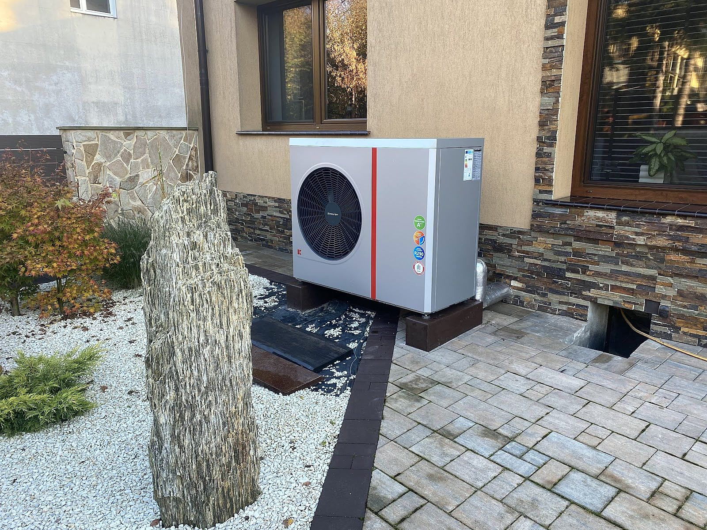
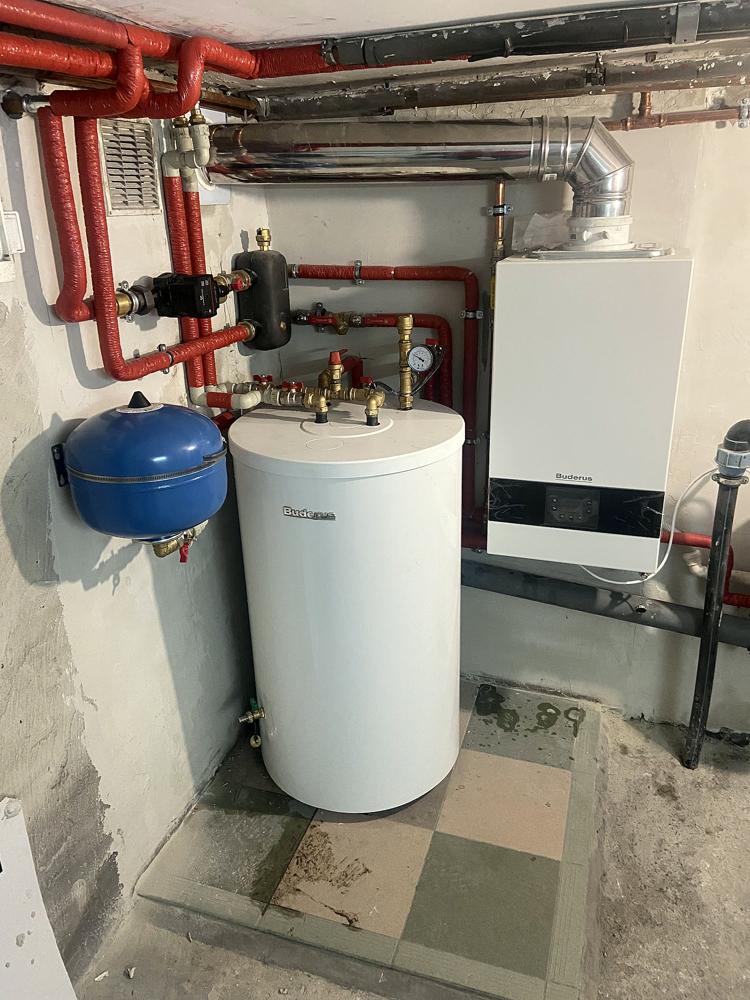
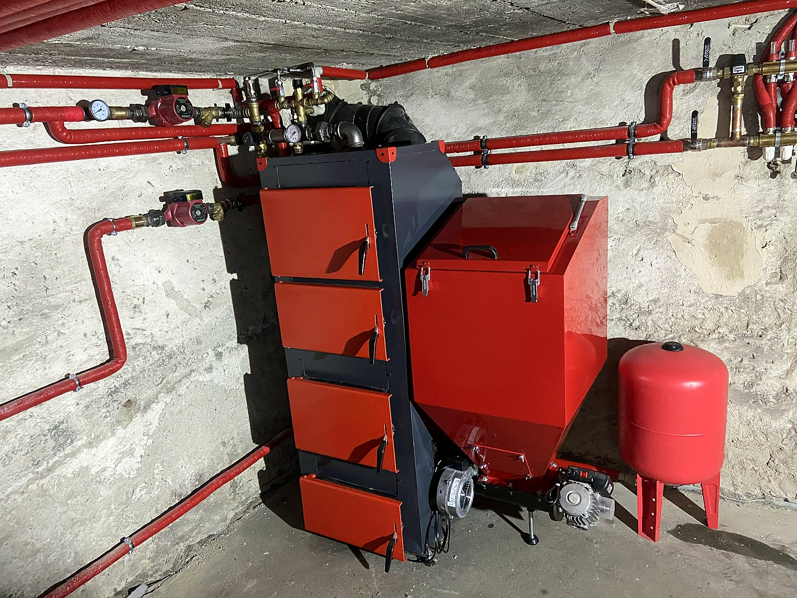
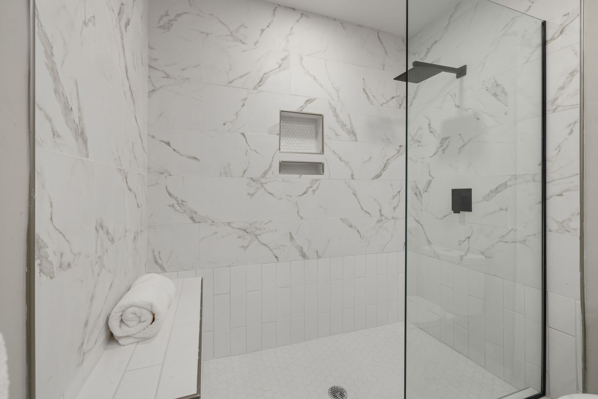

Poznaj naszą ekipę
Od zatkanego odpływu po całą kotłownię. Ty mówisz, co się dzieje - ja mówię, ile i kiedy.

O mnie
Nazywam się Adam Słowiok i robię hydraulikę w Brennej oraz w okolicznych miejscowościach. Telefon odbieram sam, przyjeżdżam sam i sam kończę robotę - nie ma tak, że wycenia jeden człowiek, a przy rurach stoi drugi, który niczego z Tobą nie ustalał.
Zanim cokolwiek rozbiorę, sprawdzam, co się naprawdę dzieje - spora część „poważnych awarii” to w praktyce uszczelka albo zapchany syfon. Jak wystarczy uszczelka, wymieniam uszczelkę.
Najwięcej roboty mam przy awariach i przy kotłowniach: przecieki, zatkane odpływy, wymiana starego kotła na gazowy kondensacyjny, instalacje wod-kan w stanie surowym i biały montaż po remoncie łazienki. Do tego centralne ogrzewanie, które grzeje nierówno albo bulgocze w grzejnikach.
Cenę podaję przed robotą, nie po niej. Jak w trakcie wyjdzie coś, czego nie było widać spod płytek, najpierw dzwonię i mówię, ile to zmienia - decyzja zostaje po Twojej stronie.
Tłumaczę po ludzku. Nie musisz wiedzieć, czym różni się zawór kulowy od grzybkowego - od tego jestem ja. Ważne, żebyś wiedział, co robię w Twoim domu i po co.
W aucie wożę części, które schodzą najczęściej: uszczelki, zawory, syfony, elastyki i kilka rodzajów złączek. Dzięki temu spora część awarii kończy się przy pierwszej wizycie, bez czekania „aż dowiozę część”.
Stare rury, kartony i opakowania zabieram ze sobą, po wierceniu odkurzam, a przed wyjściem sprawdzam, czy wszędzie jest sucho. Starego kotła też nie zostawiam pod domem - jedzie ze mną tym samym kursem.
Pracuję w Brennej i okolicy, więc jeżdżę po tych samych drogach co moi klienci. Tu nikt nie zniknie po jednej nieudanej robocie - ludzie pytają o hydraulika sąsiada, nie wyszukiwarki. Dlatego wolę powiedzieć „nie zdążę w tym tygodniu” niż przyjechać na chwilę i zostawić sprawę w połowie.
Drobna naprawa czy remont całej instalacji - przyjeżdżam tak samo.
Zasady, których się trzymam
Sześć rzeczy, na które możesz liczyć niezależnie od tego, czy to wymiana syfonu, czy cała kotłownia.
Jeden fachowiec od początku do końca
Umawiasz się ze mną i to ja przyjeżdżam. Nie przekazuję roboty dalej i nie tłumaczę się potem, że ktoś z ekipy czegoś nie dopilnował.
Cena znana przed robotą
Przez telefon podaję widełki, na miejscu konkret. Jak coś zmienia kwotę, dzwonię, zanim to zrobię - rachunek nie jest niespodzianką.
Najpierw naprawa, potem wymiana
Da się naprawić - naprawiam. Wymianę proponuję wtedy, gdy stary element i tak nie dociągnie do końca sezonu, i mówię wprost dlaczego.
Zabieram po sobie
Podłogę zakrywam, zanim rozkręcę syfon. Stare części i opakowania jadą ze mną, a po wierceniu odkurzam. Kończę wtedy, kiedy z pomieszczenia da się normalnie korzystać.
Termin, który się trzyma
Umawiam tyle robót, ile realnie zrobię. Jak coś się przesuwa, dzwonię wcześniej, a nie w dniu wizyty.
Tłumaczę po ludzku
Pokazuję, co się zepsuło i dlaczego. Nie musisz znać się na hydraulice, żeby wiedzieć, za co płacisz.
Jak to wygląda w praktyce
Trzy rzeczy, o które klienci pytają najczęściej, zanim się umówimy.

Dla kogo pracuję
Najwięcej jeżdżę do domów i mieszkań, ale robota rzadko wygląda tak samo. Raz jest to jedna zatkana rura, raz cała instalacja od zera w budynku bez tynków.
- domy jednorodzinne i mieszkania - awarie, wymiany, przeglądy przed sezonem
- budowy w stanie surowym - instalacje wod-kan i podejścia pod biały montaż
- domki i pensjonaty na wynajem - tam awaria zwykle wypada w środku sezonu
- małe firmy i wspólnoty - z fakturą i rozliczeniem przelewem

Czego u mnie nie ma
Łatwiej się umówić, kiedy z góry wiadomo, na co nie trafisz.
- infolinii i obietnicy, że „ktoś oddzwoni” - telefon odbieram sam
- wyceny podanej dopiero po skończonej robocie
- znikania w połowie na inną budowę
- namawiania na sprzęt, którego przy Twoim metrażu nie potrzebujesz

Jak się umawiamy
Najprościej zadzwonić i opowiedzieć, co się dzieje. Jak nie możesz rozmawiać, wyślij zdjęcie - po fotce kotła, syfonu albo mokrej ściany zwykle wiem już, czego się spodziewać i co zabrać.
- awaria i zalanie - przestawiam grafik i jadę najszybciej, jak się da
- robota planowana - umawiamy termin z kilkudniowym wyprzedzeniem
- przyjazd i wycena w Brennej i najbliższej okolicy nic nie kosztują
- przed przyjazdem warto wiedzieć, gdzie jest główny zawór wody
Na czym stoisz, dzwoniąc do mnie
Ocena w Google
13 opinii od ludzi z Brennej i okolicy. Możesz je przeczytać, zanim w ogóle podniesiesz słuchawkę.
Przyjazd i wycena
W Brennej i najbliższej okolicy oględziny z wyceną nic nie kosztują i do niczego nie zobowiązują.
Na wykonaną robotę
Jak po naprawie coś nie gra i to moja wina, wracam i poprawiam bez dopłaty. Do tego rachunek albo faktura VAT.
Orły Hydrauliki
Laureat plebiscytu Orły Hydrauliki 2026. Tyle o dyplomach - resztę widać na zdjęciach z montaży.
Masz robotę do zrobienia? Zapytaj o wycenę
Bez zobowiązań - opowiedz, co trzeba zrobić, a my podpowiemy jak i wycenimy.